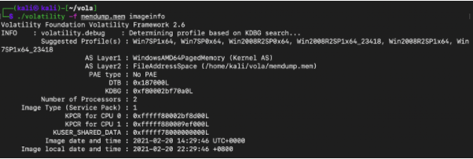
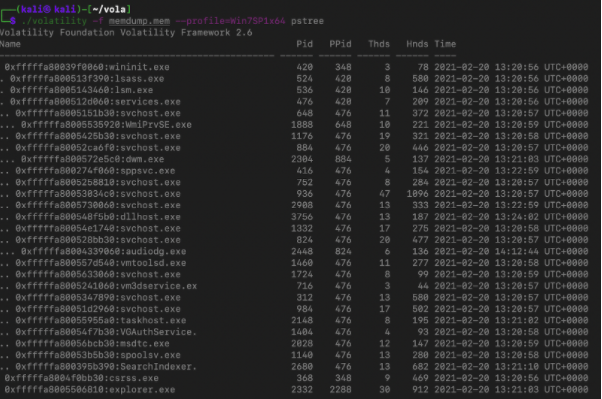
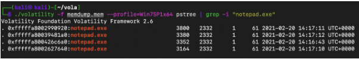
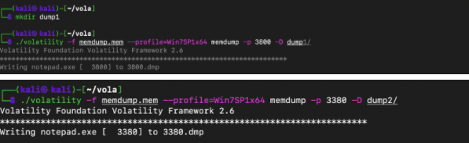
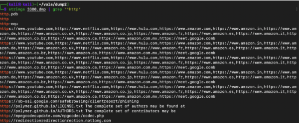
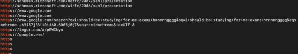
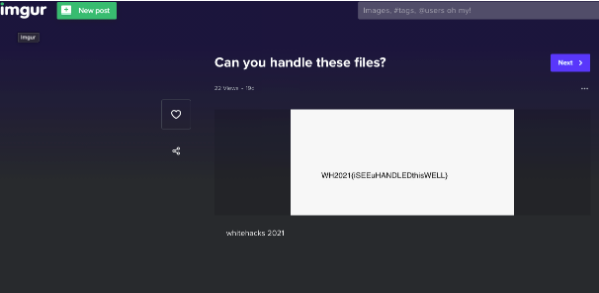

After some Googling, I found that I should use the memory forensics framework ‘Volatility’ in order to capture the flag. After installing Volatility, I extracted some basic information about the image using the imageinfo command.
Then I supplied a profile (Win7SP1x64) to Volatility and using pstree, I listed the processes that were running on the machine when the RAM image was made.
Since this is a Windows machine, the attacker probably left a link in a notepad so I used the grep command to list out all the notepad.exe processes.
There were four notepad.exe processes so proceeded to dump the data from each notepad.exe process into a directory using memdump.
Then I used strings and grep to search for URLs. The first dump yielded no obvious or interesting URLs. However, the second dump looked promising.
There was an Imgur link, surely the image of the flag must be there?
Sure enough after going to https://imgur.com/a/pRWCNyo , the image of the flag was there.
Since I had any prior experience or knowledge regarding CTFs or cybersecurity in general, going into the competition, I thought that I would not be able to solve anything. At first every single task seemed daunting. Though with some patience (alot of patience), luck and Googling (the most important skill), I managed to finish a few challenges. This was my first CTF and I thoroughly enjoyed it - the gamified style of competition makes capturing a flag so, so, so extremely satisfying! I learnt a plethora of new things from the workshop, pre training materials and the event itself - how to use Kali, compile C source code, SQL injections and so much, much more. In fact I liked the event so much that the following weekend I participated in another CTF and am looking forward to playing in many more. Thanks Whitehacks for exposing me to a whole new world!